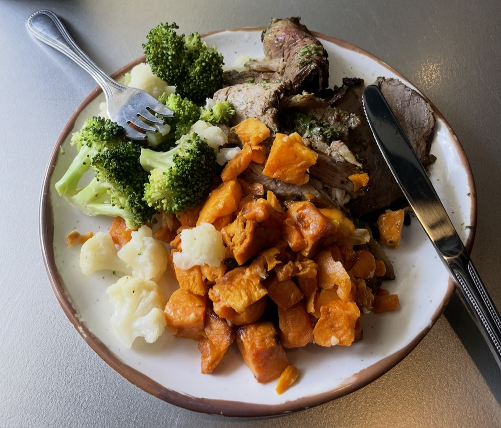
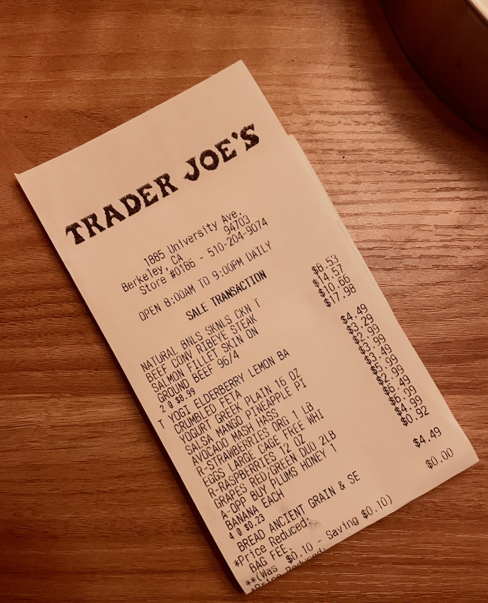

hey 👋 i'm cued. the personal fitness coach for college students
food log, workout tracker, wearables, class schedule, i handle it all. all in your messages.
ready to make fitness easy?
i text first
i text first
gym's dead right now and you're out of class till 3.
quick upper push? in and out before the rush 💪
i know your week
and i act on it
i know your week
saw the ochem midterm on your calendar tues. moving leg day to wednesday.
you're at moffitt. rsf is 6 min away and half empty.
line at rsf is 25 min. put you in the virtual queue — you're up at 5:32, leave by 5:20.
alr bet lmk. i'll probably be studying at doe most of the weekend.
and i act on it
i looked at your schedule today, it seems like you have class from 2-5. which of these do you prefer? lmk
locked. 5:30 it is 👍
i log your sets
and i know when you're stronger
i log your sets
push day. 4 sets bench, then the usual. tap as you go — text me if a set goes different.
190 x4
swapped it in.
and i know when you're stronger
190 × 4 is a PR 🎉 last time was 185 × 3.
push · wed · 48 min
bench press — 185×5 · 185×5 · 190×4 · 185×5
incline db press — 65×10 · 65×9 · 65×8
cable fly — 30×12 · 30×12 · 30×11
tricep pushdown — 50×12 · 50×12 · 50×10
9,240 lb total · 1 PR
three taps and one text. that's the whole log — no app opened.
i know what's for dinner
i know what's for dinner
what's good at crossroads rn
chimichurri tri-tip tonight. grab the roasted sweet potatoes, pile on the veg
that's ~45g protein. you're at 80 for the day

logged. you went heavy on the steak — closer to 55. nice
groceries? got it.
groceries? got it.

got your trader joe's receipt. logged the yogurt, eggs, and chicken — you're stocked through thursday.
i remember
i remember
how'd the ochem midterm go
brutal but done
how'd my week go
ok. you're back on normal sched now — pull day tonight, the one we pushed from last week
and you've had the tri-tip four times 😭 there's salmon at foothill
i read your watch
i read your watch
saw the run on strava — 4.2 mi, 8:40 pace, before your 9am. nice.
keep strava. i read it. cardio's covered, so tonight stays push.
your watch says you slept 4 hours 💀 today is not the day for heavy squats
yeah… rough night lol
moved leg day to thursday. tonight: walk, protein, early bed
no watch? no problem
no watch? no problem
slept like garbage
that works too. no watch needed — pushing legs a day, easy pull today.
apple watch, whoop, oura, garmin — great if you have one, never required
so you can delete these
so you can delete these
that's six apps, a notes file, and a coach you're paying for — all doing pieces of one job. (strava stays. i like strava.)
i'm all of them. one thread. one number.
no app. no login. no $200/mo coach.
ready when you are. nothing to download.
FAQs
The stuff people ask before they sign up.
Is this an app?
no. it's a number. you text it like you text anyone.
How much does it cost?
Free during the open beta. When we move out of beta, early users will get founding-member pricing locked in — details to come.
What data does Cued use?
Only what you connect: your wearable (sleep, HRV, heart rate), your calendar (for scheduling), and the goals/preferences you share over text. Nothing more, nothing sold.
Do I need a wearable?
Nope. Cued works without one — you just tell it how you slept, how you're feeling, and what's coming up, and it builds your week from there. If you do have an Apple Watch, Whoop, Oura, or Garmin, connecting it lets Cued read your data passively so you don't have to report in every morning — plus Strava, if you run. Better with one, totally usable without.
How does the wearable connect?
A one-time link via Apple Health, Whoop, Oura, Garmin, or Strava. Takes about 30 seconds. After that, Cued reads passively — you don't have to do anything.
Is this actually a coach or just a chatbot?
Cued is an AI built around real coaching principles — progressive overload, recovery-aware programming, autoregulation. It's not a generic chatbot; every plan is personalized to your data and revised continuously.
What about privacy?
Your conversations and health data are encrypted in transit and at rest. We never sell data and never share it with third parties. You can delete everything any time by texting "delete me".
Can I cancel any time?
Reply "stop" and Cued stops texting immediately. No retention dance, no exit survey. Come back whenever.
Who is Cued for?
We built Cued for college students — that's the rhythm we know. Class schedules that shift every semester, dorm gyms and the RSF, dining hall food, weeks where midterms eat your sleep. If that sounds familiar, you're who we built this for. (Post-grads and anyone juggling a busy life are welcome too — the patterns hold.)
Who's behind Cued?
A Berkeley student who got tired of switching between four apps just to keep a workout streak going. Still a student; still figuring it out alongside you.